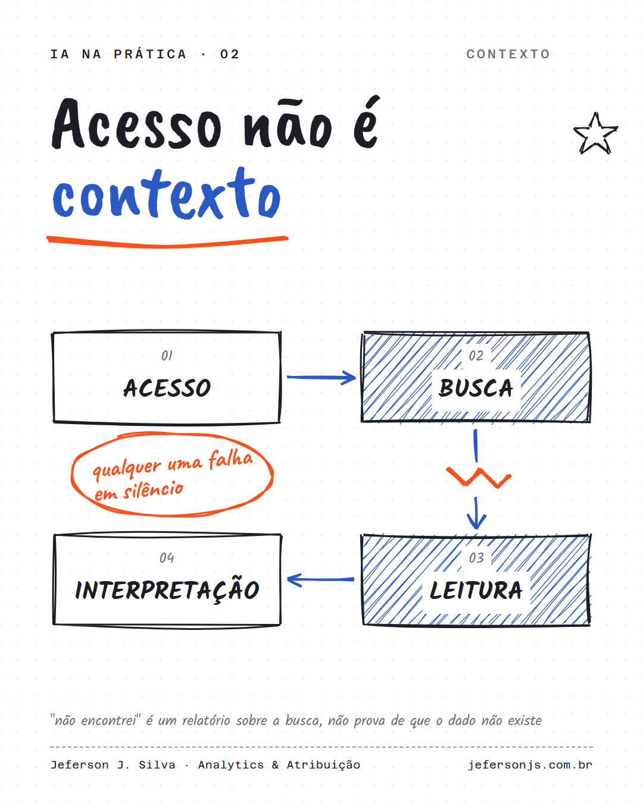

Dar acesso aos dados para a IA não é dar contexto.
A Marina Mogilko contou na newsletter dela uma cena que eu já vi em time de dados. Ela pediu ao Claude uma estratégia para as parcerias da empresa. Ele não citou uma marca sequer, mesmo com quase todo contrato tendo passado por ele de algum jeito.
A explicação dela é a melhor que eu já li: acesso, busca, leitura e interpretação são etapas diferentes, e qualquer uma pode falhar em silêncio. "Não encontrei" é um relatório sobre a busca, não prova de que o dado não existe.
O problema não era o prompt. Era onde o dado morava e o quanto ele estava atualizado.
Em analytics isso aparece assim:
Quando liguei um LLM no data warehouse para os times de mídia e de conteúdo, o ganho veio de uma coisa sem glamour: um warehouse único, atualizado em D-1, com a mesma definição de métrica do painel.
Qualidade de resposta de IA é, cada vez mais, um problema de engenharia de dados.
Quando a IA erra, o seu time culpa o prompt ou o dado?
30 minutos, de graça. Entro nas suas plataformas e mostro os três problemas mais críticos de mensuração.
Quero meu diagnóstico grátis →